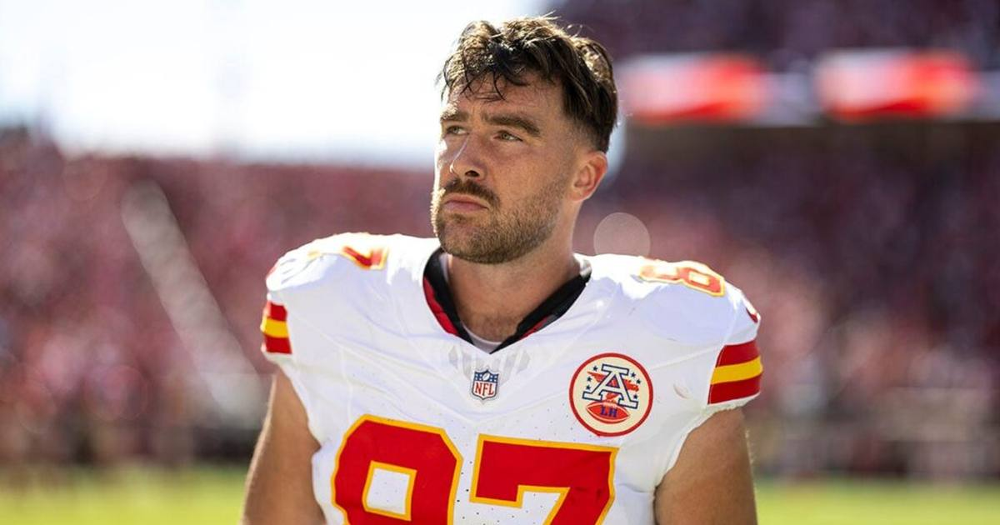

Rice Still Out of Practice, Kelce Limited Ahead of Sunday Night in Seattle
The banged-up game of the weekend is Sunday night in Seattle: Rashee Rice stayed out Thursday with hamstring and knee injuries, Travis Kelce was limited again with an ankle, and the Seahawks' report grew too.

Disclosure: this post contains affiliate links. I earn a commission on qualifying purchases.
The banged-up game of the weekend is Sunday night in Seattle, where Travis Kelce was limited again Thursday with an ankle injury and Rashee Rice stayed out of practice with the hamstring and knee injuries that have sidelined him since the October 4 win over the Raiders.
Seattle's injury report grew too, with DeMarcus Lawrence (knee) and Uchenna Nwosu (hip) added ahead of Sunday's game.
Chiefs injury picture (Thursday)
Rashee Rice (WR): Hamstring/knee; Did not practice
Travis Kelce (TE): Ankle; Limited
Jaylon Moore (RT): Concussion; Did not practice
L'Jarius Sneed (CB): Knee; Limited
Patrick Mahomes (QB): Knee; Full
Rice has not played since Week 4, and his potential availability for Sunday is in jeopardy. Kelce tweaked the ankle in Week 6 against the Chargers and has been limited all week. (NBC Sports)
Seahawks additions
Seattle added pass rusher DeMarcus Lawrence (knee) and linebacker Uchenna Nwosu (hip) to the report ahead of the matchup — not the week to be adding edge defenders to the injury list against a banged-up offensive line.
The matchup backdrop
The Chiefs walk into Seattle facing Kenneth Walker III, who leads the league with 665 rushing yards in his first five games of the season for the Seahawks. If Rice and Kelce are limited or out, Kansas City's passing game leans hard on Xavier Worthy and the depth corps in a hostile Sunday-night environment.
Watch
Source: "Chiefs Fans Get MORE Injury News! Ft. Josh Simmons, Rashee Rice, & Jaylon Moore" — Chiefs Report. A breakdown of the latest Rashee Rice injury status and the Chiefs' offensive-line concerns ahead of the Sunday Night Football matchup in Seattle.
Gear up for Sunday night: Chiefs and Seahawks gear at Fanatics.
Gear up: Chiefs/Seahawks gear and Sunday-night apparel via Fanatics